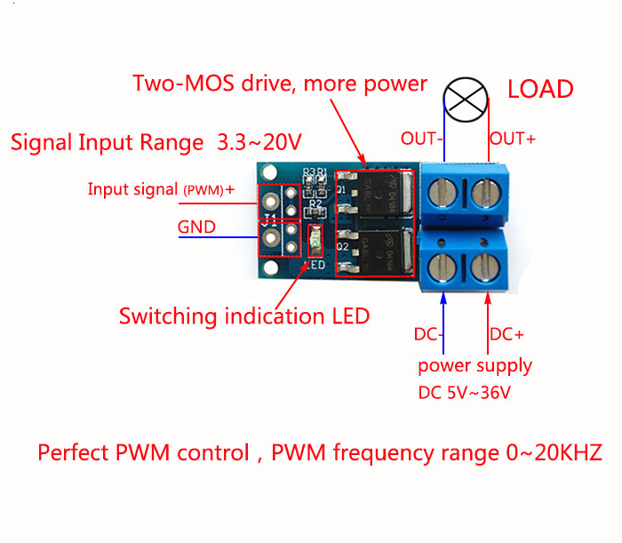
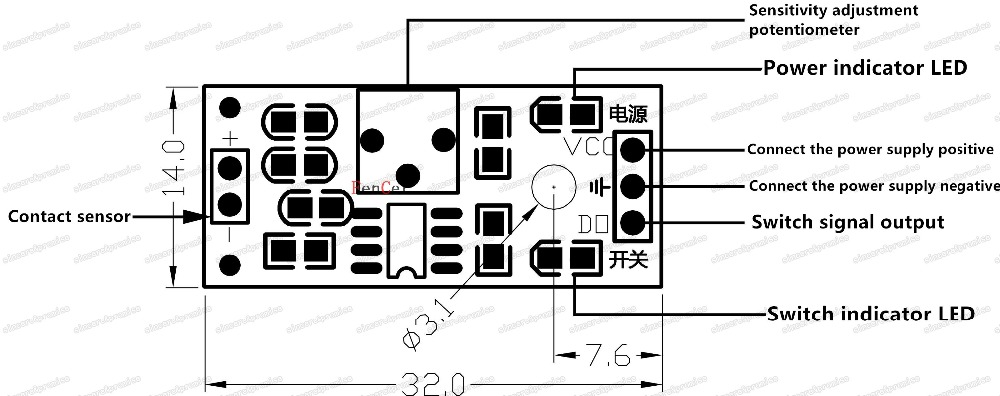
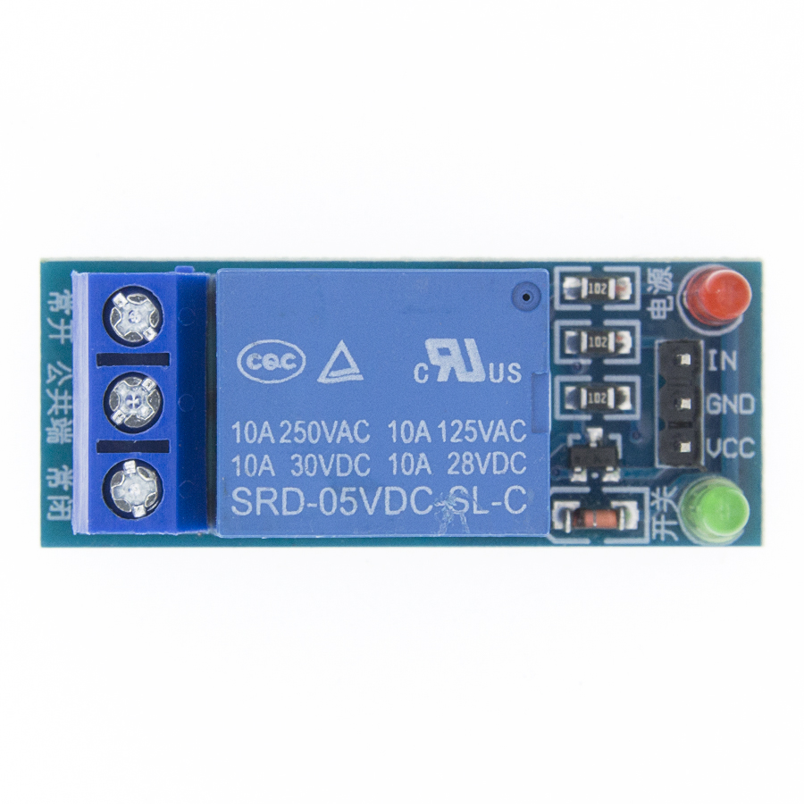

Оборудование
1. Беспроводной модуль CH340/CP2102/CH9102X NodeMcu V3 V2 Lua WIFI Интернет вещей, макетная плата на основе ESP8266 ESP-12E
ESP8266 CH340 V3/ESP8266 CP2102
2. Интерактивный
3. Программируемый
4. Низкая стоимость
5. Простой
6. Умный
Wi-Fi включен
Ard -- uino-like hardware IO
Расширенный API для аппаратного ввода, который может значительно уменьшить избыточную работу для настройки и управления аппаратным обеспечением.
Код как ard -- uino, но в интерактивном режиме в Lua script.
Сетевой API в стиле Nodejs
API с Event-driven для сетевых аппликаторов, которые faciliates разработчики пишут код работает на MCU размером 5 мм * 5 мм в стиле Nodejs.
Значительно ускоряет процесс разработки приложений IOT.
Введение:
ESP32 уже интегрирована антенна и RF балун, усилитель мощности, малошумные усилители, фильтры,
И модуль управления питанием. Все решение занимает наименьшее количество площади печатной платы.
Эта плата используется с 2,4 GHz dual-mode Wi-Fi и Bluetooth чипсы от TSMC 40nm малой мощности технологии,
Мощность и свойства RF лучше всего, что является безопасным, надежным и масштабируемым для различных приложений.
Особенности:
Прекрасное соотношение цены и качества
Небольшой объем, легко приспосабливается к другим продуктам
Сильная функция с поддержкой протокола LWIP, Freertos
Поддержка трех режимов: AP, STA и AP + STA
Поддержка программы Lua, легко разрабатывать
=================================================================Триггерный переключатель MOS FET, 15 А, 400 Вт, панель управления регулятором модуль PWM для arduino
Мощная трубка MOS, триггерный переключатель, модуль привода, регулирование ШИМ, переключатель с электронным управлением
Основные характеристики модуля:
1. Использование импортного двойного MOS параллельного активного выхода, более низкое сопротивление, более ток, сильная мощность. При комнатной температуре обеспечивает ток 15A, 400 Вт;
2. Широкий вход напряжения, Поддержка ШИМ;
3. Легко управлять устройствами высокой мощности.
Характеристики и применение продукта:
1. Рабочее напряжение: 5 В постоянного тока-36 в;
2. Источник запуска: цифровой высокий-низкий (DC3.3V - 20V), может быть подключен к микроконтроллеру IO порт, интерфейсы PLC, питание постоянного тока, вы можете получить доступ к сигналу PWM, сигнал может быть поддержан частотным диапазоном 0-20 кГц.
3. Выходная мощность: постоянный ток 5 В-36 в, при комнатной температуре, непрерывный ток 15 А, мощность 400 Вт!
4. Применение: высокомощное оборудование, двигатели, светильник, лампы, светодиодный светильник s, двигатели постоянного тока, микронасосы, электромагнитный клапан; Контроль скорости двигателя, яркость лампы.
5. Срок службы: безлимитный;
6. Рабочая температура: -40-85℃;
7. Размеры: 3,4*1,7*1,2 см.

------------------------------------------------------------------------------------------------------------------------------------------------------------
Светочувствительный модуль сопротивления яркости, датчик интенсивности светильник, новый для Arduino
Purpose:
Light intensity detected light level sensors, optical module Smart car search
Module Features:
1, using the sensitive type photosensitive resistance sensor
2, the comparator output signal clean waveform is good, driving ability, than 15mA.
3, with adjustable potentiometer can adjust the brightness of the light detected
4, Working voltage 3.3V-5V
5, the output format: Digital switching output (0 and 1)
6, with bolt holes for easy installation
7, a small board PCB size: 3.2cm x 1.4cm
8, using a wide voltage LM393 comparator
Module for use
1, the photosensitive resistor module most sensitive to ambient light, generally used to detect the brightness of the ambient light, triggering microcontroller or relay modules;
2, the module brightness of ambient light reach the set threshold, DO-side output high when the ambient light level exceeds the set threshold, DO-ended output low;
3, DO output can be directly connected with the microcontroller through the microcontroller to detect high and low, thereby detecting changes in ambient light intensity;
4, DO OUR outputs can directly drive the relay module, which can be composed of a light control switch.
====================================
Цель: Интенсивность света определяется датчиками уровня освещенности, оптическим модулем Умный поиск автомобиля Особенности модуля:
1, с использованием светочувствительного датчика сопротивления чувствительного типа
2, чистый сигнал выходного сигнала компаратора хороший, способность к вождению, чем 15 мА.
3, с регулируемым потенциометром можно регулировать яркость обнаруженного света
4, рабочее напряжение 3,3 В-5 В
5, выходной формат: цифровой коммутационный выход (0 и 1)
6, с отверстиями для болтов для легкой установки
7, размер печатной платы небольшой платы: 3,2 см x 1,4 см
8, используя компаратор LM393 широкого напряжения Модуль для использования
1, модуль светочувствительного резистора, наиболее чувствительный к окружающему свету, обычно используемый для определения яркости окружающего света, срабатывания микроконтроллера или релейных модулей;
2, яркость модуля окружающего света достигает установленного порога, выход на стороне DO высокий, когда уровень окружающего освещения превышает установленный порог, выходной сигнал на выходе DO низкий;
3, выход DO может быть напрямую подключен к микроконтроллеру через микроконтроллер для обнаружения высокая и низкая, тем самым обнаруживая изменения в интенсивности окружающего света;
4. НАШИ выходы могут напрямую управлять релейным модулем, который может состоять из переключателя управления освещением.
Структура продукта и схема подключения
Product structure and wiring diagram

====================================================================
Релейный модуль 5 в 1 2 4 8 каналов с оптроном. Выход X Way для Arduino 1 канал 2 канала 4 канала 8 каналов
Описание товара:
1 канальный релейный модуль
Максимальная нагрузка: 250 В/10 А переменного тока, 30 В/10 А постоянного тока
Ток триггера: 5 мА
Рабочее напряжение: 5 В
Размер модуля: 50x26x18,5 мм (Д х Ш х В)
Четыре крепежных болта отверстия, диаметр 3,1 мм
DC +: положительный источник питания (VCC)
DC-: отрицательный источник питания (GND)
В: может быть реле управления высокого или низкого уровня
НЕТ: нормально открытый релейный интерфейс
COM: реле общего интерфейса
NC: нормально закрытый релейный интерфейс
2 канальный релейный модуль
1 Размеры: 50,5 мм (длина) * 38,5 мм (Ш) * 18,5 (В)
2 Вес: 31 г
3. Цвет печатной платы: черный
4 доска четыре недели с четырьмя винтами отверстий, диаметр отверстия 3,1 мм, просты в установке и фиксированной
5 реле высокого качества свободные музыкальные реле SPDT. Обычный терминал, нормально открытый, один нормально закрытый терминал
6 оптопары изоляции, хорошее анти-помех
7. Низкая тяга, высокий выпуск. Индикатор состояния энергии светильник, выключается светодиодный статус релиза
8.VCC системы питания, JD_VCC реле питания. Вы можете подключить джемперы
Электрические параметры:
Напряжение питания: 5VDC, 12VDC
Ток: более 100 мА
Нагрузка: 250 в 10 А переменного тока или 30 в 10 А постоянного тока
Проводка:
VCC: система положительного питания
GND: отрицательная мощность системы
В1-ин2: реле управления портами
4-channelrelayoutput модули, relayoutput contacts250A 10A. Вход в 1,IN2,IN3, IN4, сигнал linelowefficient. VCC, GNDpower вход, canrelaya separatowersupplyrelaypower вход VCC.
Использование:
1, управление supportallMCU.
2. Промышленный сектор;
3, PLCcontrol;
4, smart homecontrol
8 канальный релейный модуль
Особенности
Использование реле высокого тока, AC250V 10A DC30V 10A
Свяжитесь с некоторыми независимыми проводами, безопасными и надежными
Стандартный интерфейс, может быть расширен в различных досках разработки
С фиксированными винтовыми отверстиями для легкой установки
Подходит для различных платформ, таких как 51/AVR/ARM
Описание модуля:
1, модуль соответствует международным стандартам безопасности, области контроля нагрузки и региональ изоляции;
2. С использованием двухсторонней FR-4 печатной платы, высокопроизводительный процесс производства чипов;
3. С использованием аутентичного релейного управления свободной музыкой;
4, с инструкциями по реле, отсоедините, отсоедините не светит;
5. Вход сигнала имеет низкий сигнал, часто начинающийся с общего терминала будет включен;
6. Реле может управлять различными устройствами и нагрузкой;
7 , 8 и 8 нормально открытый нормально закрытый контакт;
8, синий KF301 клеммы к линии управления более удобны.
9, Размер модуля: 138 м * 56 мм * 18,5 мм (Д * Ш * В), вес: 120 г
10 с 4 крепежными отверстиями для болтов, отверстие 3,1 мм, шаг 131 мм * 49,5 мм
11, завершены 100% функциональным испытанием и испытанием стабильности
Два интерфейса модуля:
1, VCC: 5 в источник питания, подключенный к положительному
2, GND: 5 в источник питания, подключенный к отрицательному
3. IN1-IN8: триггер, активный низкий
Релейные выходы: 12-интерфейс командной строки, интерфейс может быть непосредственно подключенный к все версии, дружественный
1, NO1 - NO8: обычно открытые релейные интерфейсы, реле перед свободным после того, как тянуть коротко с COM
2, COM1 - COM8 реле общий интерфейс
3, NC1 - NC8: нормально замкнутое реле интерфейса замыкается с COM назад, после пуста
Низкий уровень 5 в твердотельное реле:
Описание товара:
1. Omron 5V твердотельное реле 240V 2A, выход с резистивный плавкий предохранитель 240V 2A.
2. Размер:
1 способ: 25*34*25 (длинный * широкий * высокий)
2 способа: 55*33*25 (длинный * широкий * высокий)
4 способа: 57*55*25 (длинный * широкий * высокий)
8 способов: 106*56*25 (Д * Ш * В)
3. Входная мощность: 5 В постоянного тока (160 мА)
4. Входное контрольное напряжение сигнала:
Высокий уровень модуль: (0-2,5 V состояние реле низкого уровня)
(3,3-5V состояние высокого уровня реле)
Низкий уровень модуль: (0-2,5 V состояние реле низкого уровня в выключенном состоянии)
(3,3-5V состояние высокого уровня реле)
5. Есть 2,54 булавки и синий KF301 терминала линии управления элементах обеспечивается повышенное удобство.
Входная секция:
DC +: подключите источник питания положительным (в соответствии с напряжением реле)
DC-: подключите источник питания отрицательным
CH1: 1 релейный модуль сигнальный триггер терминал (низкий уровень триггера активный)
CH2: 2 релейный модуль сигнальный триггер терминал (низкий уровень триггера активный)
CH3: 2 релейный модуль сигнальный триггер терминал (низкий уровень триггера активный)
CH4: 2 релейный модуль сигнальный триггер терминал (низкий уровень триггера активный)
Высокое и низкое значение:
Триггер высокого уровня относится к стороне триггера сигнала (IN), а отрицательный источник питания имеет положительное напряжение между положительным и источником питания, как правило, подключается к стороне триггера, когда триггерное боковое напряжение или триггер достигают триггерного напряжения, реле тянется.
Низкоуровневый триггер относится к напряжению между сигнальным триггерным терминалом и отрицательным терминалом источника питания OV, или напряжение триггерного терминала ниже, чем напряжение положительного терминала источника питания. Когда напряжение достаточно низкое для запуска, реле вытягивается, отрицательная сторона источника питания подключена к триггерной стороне триггера, так что реле тянется.
Электрические параметры:
Версия напряжения Quiescent текущий рабочий ток триггер напряжения триггер тока
1 канал 5V 0mA 12.5mA 0-2,5 V 2mA
2 5V 0mA 22.5mA 0-2,5 V 2mA
4 5V 0mA 48mA 0-2,5 V 2mA
4 5V 0mA 102mA 0-2,5 V 2mA
Руководство по эксплуатации:
1. Блок питания: мощность должна быть постоянного тока, напряжения и напряжения реле, чтобы соответствовать
2. Метод подключения:
Когда ТРИГГЕРНАЯ сторона уровня триггера сигнала, реле будет подключено, устройство имеет электричество и работает
Меры предосторожности:
1. Блок питания: Питание должно быть DC, 5 в источник питания
2. Модуль управления клеммой напряжения: Этот модуль может использоваться только для контроля переменного тока, не может контролировать постоянный ток.
-------------------------------------------------